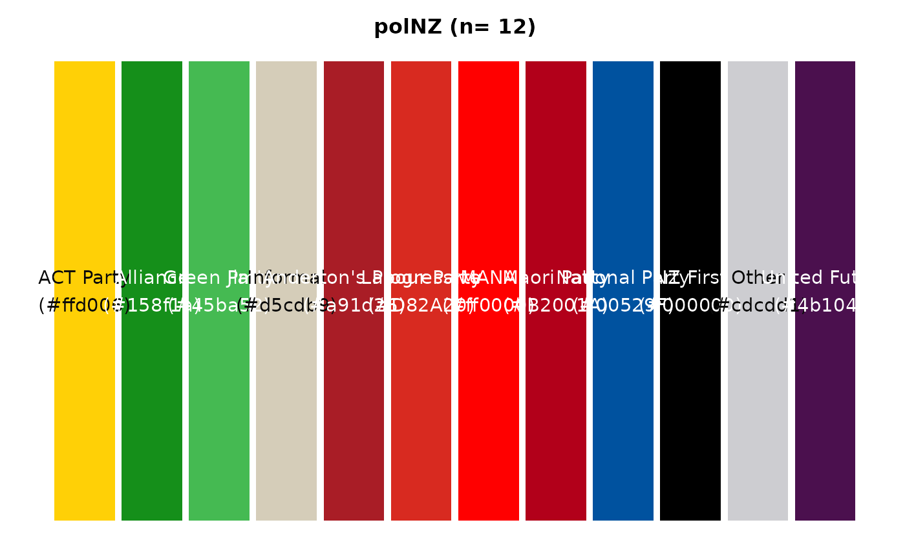
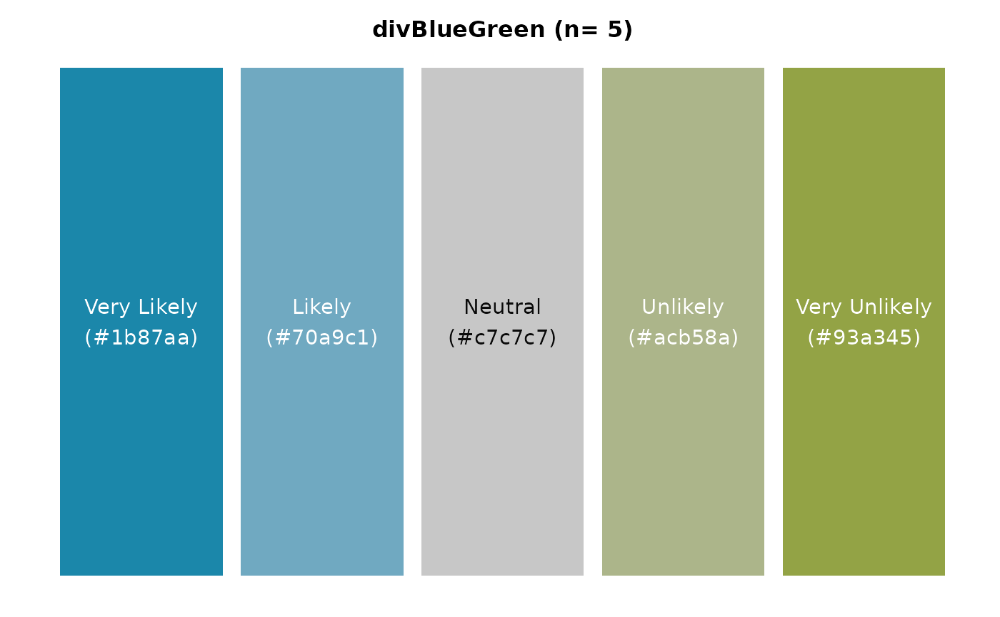

Mastering Colour Selection
Source:vignettes/articles/creating-colour-palettes.rmd
creating-colour-palettes.rmd
This article provides guidance on using the
colour_display(), colour_pal(), and
colour_prep() functions from the scgUtils
package to create and visualise colour palettes effectively.
Colour plays a crucial role in data visualisation. It not only makes
plots more aesthetically pleasing but also aids in communicating data
patterns and insights more effectively. The functions
colour_display(), colour_pal(), and
colour_prep() are designed to help users select and easily
apply colour palettes that are colourblind-friendly.
Viewing Available Colours with colour_display()
The colour_display() function visualises colour options
from a specified palette. It integrates with colour_pal()
to fetch colour data and uses an internal helper function,
contrast_test(), to ensure text readability on coloured
bars. The purpose of the colour_display() function is for
you to review the colours before applying them to your data
visualisations (which use the same arguments as
colour_pal()).
Categorical Colours Available:
Categorical colours and palettes either have a name associated with them of a “cat” prefix.
# All individual colours
colour_display("All")
# Individual colour
colour_display("Jaffa")
# Simplified version of the categorical palette
colour_display("catSimplified")
# Extended version of the categorical palette
colour_display("catExtended")Political Palettes Available:
Political palettes have the prefix “pol” followed by the relevant country.
# UK
colour_display("polUK")
# Australia
colour_display("polAus")
# NZ
colour_display("polNZ")
Sequential Palettes Available:
Sequential palettes contain the prefix “seq” followed by a colour. These can be used in discrete or continuous scales.
# Green sequential continuous scale with 7 colours
colour_display("seqGreen", 7, type = "continuous")
# Blue sequential discrete scale with all 7 colours
colour_display("seqBlue")
# Red sequential discrete scale with all 7 colours
colour_display("seqRed")Divergent Palettes Available:
Divergent palettes contain the prefix “div” followed by two colours. These are best used in likert scales. The colours can have names assigned to them to match data in plots.
# Blue-Green diverging colour palette with 5 levels with assigned values
colour_display(pal_name = "divBlueGreen",
n = 5,
assign = c("Very Likely","Likely","Neutral","Unlikely","Very Unlikely"))
# Red-Blue divergent palette showing all 14 colours (i.e., n = 14)
colour_display("divRedBlue")Retrieving Colours with colour_pal()
The colour_pal() function generates colour palettes for
graphs. It supports sequential, diverging, categorical, and political
palettes, allowing users to retrieve individual colours or ranges of
colours based on the specified palette. View the previous sections for
all colours and palettes available.
# Example: Return full categorical extended palette
colour_pal("catExtended")
#> [1] "#478c5b" "#374e8e" "#df7c18" "#ac004f" "#4fbbae" "#ce4631"
#> [7] "#006d64" "#1b87aa" "#e3b13e" "#ae49a2" "#383751" "#704600"
#> [13] "#93a345" "#7e7e8f" "#d5cdb9" "#a07bde" "#8aabfd" "#a08962"
# Example: Return an individual colour
colour_pal("Jaffa")
#> [1] "#e78e47"
# Example: Return a diverging palette with assigned categories
colour_pal("divBlueGreen", 5, c("Very Likely", "Likely", "Neutral", "Unlikely", "Very Unlikely"))
#> $`Very Likely`
#> [1] "#1b87aa"
#>
#> $Likely
#> [1] "#70a9c1"
#>
#> $Neutral
#> [1] "#c7c7c7"
#>
#> $Unlikely
#> [1] "#acb58a"
#>
#> $`Very Unlikely`
#> [1] "#93a345"Preparing Palettes with colour_prep()
colour_prep() prepares a colour palette for visualising
data by assigning colours to unique values across specified columns in a
data frame. It is particularly useful for creating consistent colour
mappings in visualisations with political parties.
# Example data frame
df <- data.frame(
Category1 = c("Scottish National Party (SNP)", "Labour", "Conservative", "Other"),
Category2 = c("An independent candidate", "Invalid_Party_Name", "Other", "Conservative")
)
# Prepare a colour palette for the unique values in Category1 and Category2
colour_palette <- colour_prep(df, c("Category1", "Category2"))
# Print the prepared colour palette
print(colour_palette)
#> $`An independent candidate`
#> [1] "#478c5b"
#>
#> $Conservative
#> [1] "#374e8e"
#>
#> $Invalid_Party_Name
#> [1] "#df7c18"
#>
#> $Labour
#> [1] "#ac004f"
#>
#> $Other
#> [1] "#4fbbae"
#>
#> $`Scottish National Party (SNP)`
#> [1] "#ce4631"